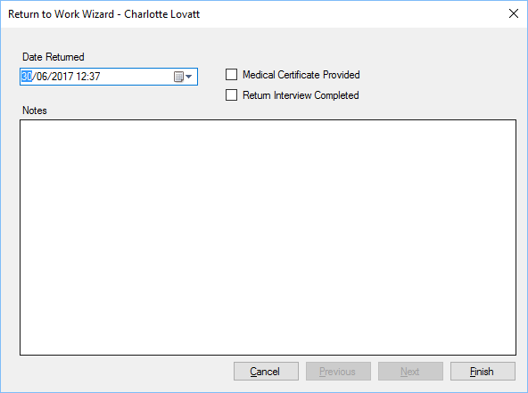

Return To Work
Previous
Top
Next
When a member of staff returns to work you can need to select Return to Work menu, enter the date/time the staff member returned, notes are optional but should be included if a return to work interview is completed.
